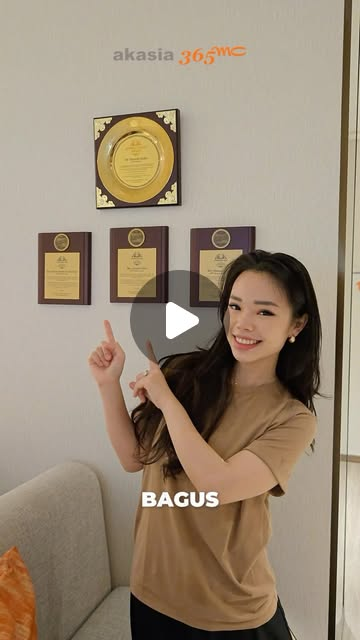
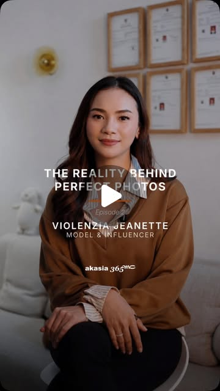
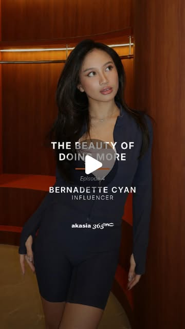
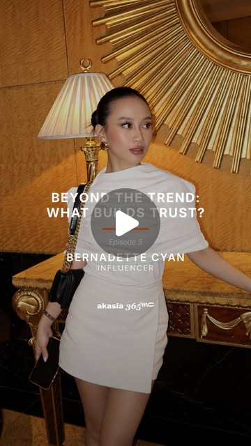
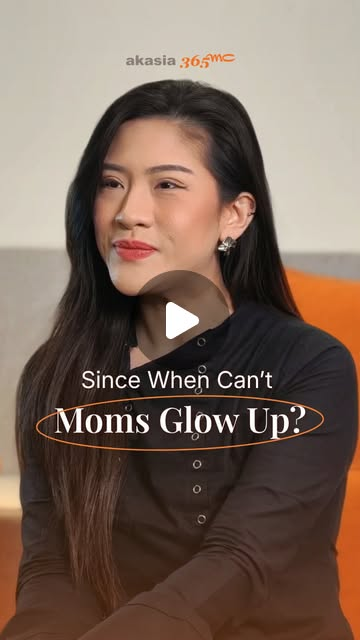
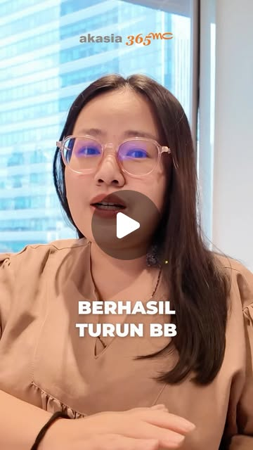
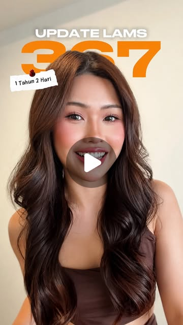

Lingkar Tubuh Susut Hingga 7 cm dalam 30 Hari,*
Tanpa Perlu Rawat Inap.
Udah capek diet ketat dan rutin olahraga tapi lipatan lemak di area target tetap membandel? Teknologi LAMS dari Korea mengeluarkan tumpukan lemak langsung dari sumbernya — 100% bius lokal sadar, minimal invasif, dan bisa beraktivitas setelah tindakan.
*Berdasarkan evaluasi klinis rata-rata pengurangan lingkar area perut/lengan pasien LAMS Akasia 365mc dalam 30–45 hari pasca tindakan dan program aftercare. Hasil aktual bervariasi bergantung pada ketebalan lemak dan kondisi anatomi individu.
Jadwalkan Evaluasi Klinis & 3D Scan
Kenapa Lemak Tertentu Tetap Membandel Walau Sudah Diet & Olahraga?
Diet dan olahraga hanya mengecilkan ukuran kantong lemak untuk sementara, bukan membuangnya. Itu sebabnya lemak di perut bawah, pinggang, atau lengan tetap membandel dan paling cepat melar kembali saat pola makan kembali normal.
Teknologi LAMS dari Korea bekerja berbeda: tumpukan lemak membandel dikeluarkan langsung secara presisi lewat prosedur minimal invasif—100% bius lokal sadar, tanpa perlu rawat inap, dan minim downtime. Hasil nyatanya bukan janji manis—lihat langsung dokumentasi klinis pasien nyata kami di bawah ini:
*Hasil aktual pasien klinik Akasia 365mc. Geser ke kanan untuk melihat area tubuh lainnya.
- ✕ Bius total & intubasi selang pernapasan
- ✕ Sayatan pisau bedah besar & luka jahitan lebar
- ✕ Wajib cuti kerja & korset ketat berminggu-minggu
- ✓ 100% bius lokal sadar (santai sambil main HP)
- ✓ Minimal invasif & minimal downtime
- ✓ Tanpa perlu rawat inap, bisa aktivitas setelah tindakan
“It’s Time To Be You.”
Bukan untuk mengubah kamu jadi orang lain, tapi membuang lemak membandel agar siluet alami tubuhmu kembali terlihat dan kamu percaya diri berpakaian apa saja.
Cek Kelayakan Area Tubuhmu Bersama Dokter Spesialis →Inilah yang Akan Kamu Dapatkan dalam Sesi Evaluasi Klinis 1-on-1:
Ketahui anatomi lemak tubuh dan rencana pembentukan kontur secara komprehensif sebelum mengambil keputusan medis apapun.
Akasia 365mc Diagnostic Inclusions
1. 3D Full Body Scan & Detailed Body Composition Check
Pemindaian digital 360° untuk memetakan ketebalan lapisan lemak subkutan vs lemak viseral secara akurat dan presisi.
2. Konsultasi 1-on-1 Dokter Spesialis Bersertifikat Korea
Pemeriksaan pinch-test langsung, evaluasi elastisitas jaringan kulit, serta verifikasi kelayakan medis secara objektif.
3. Personalized Contour Roadmap & Analisa Siluet Proporsional
Rancangan target susut lingkar dan pemetaan kontur yang realistis, aman, dan disesuaikan postur alami tubuhmu.
BONUS: Akses Jalur Prioritas VIP Fast-Track
VIP INCLUSIONAkses slot konsultasi privat tanpa antre publik + pendampingan Medical Concierge via WhatsApp.
🔒 Dibatasi maksimal 5 pasien konsultasi per hari untuk menjaga standar ketelitian diagnosis dokter spesialis.
Jawaban Cepat Pertanyaan Kamu:
Nggak. Sebelum tindakan diberikan bius lokal, jadi rasa tidak nyaman sangat minimal. Mayoritas pasien bisa santai main HP atau nonton selama prosedur.
Sel lemak dewasa yang sudah disedot keluar secara fisik tidak akan tumbuh lagi. Proporsi tubuhmu di area tersebut akan tetap lebih ramping permanen.
Nggak perlu cuti panjang. Tindakan berkisar 3–6 jam (tergantung luas area target) ditambah 1 jam observasi di recovery room. Tanpa perlu rawat inap, kamu bisa langsung pulang di hari yang sama dan bisa beraktivitas setelah tindakan.
Berbeda. LAMS berfokus pada fat removal (pengeluaran lemak membandel) dan pembentukan siluet tubuh (body contouring) di area tertentu, bukan program penurunan berat badan/timbangan. Berat badan dipengaruhi pola makan dan metabolisme, sedangkan LAMS memperbaiki proporsi dan lingkar tubuh yang tidak kunjung berubah meski sudah diet.
Cerita Nyata Mereka yang Sudah Mencoba LAMS
Dengar langsung pengalaman jujur dan cerita nyata tanpa rekayasa dari mereka yang sudah merasakan perubahannya.

"One Treatment, Noticeable Difference: Thigh Gap & Paha Ramping"
Jesselyn
Tonton di Instagram →
"The Reality Behind Perfect Photos"
Violenzia Jeanette
Tonton di Instagram →
"Hidup Lebih Ringan Saat Kita Nyaman Sama Penampilan Kita"
Cyan Gainara
Tonton di Instagram →
"Beyond the Trend: Kenapa Rasa Aman Dokter Lebih Penting Dari Tren"
Cyan Gainara
Tonton di Instagram →
"Multitasking Mom: Nggak Perlu Kompromi Soal Self-Care"
Struggle Ibu Pasca Melahirkan
Tonton di Instagram →
"-17 KG Dalam 2 Bulan: Kisah Nyata Transformasi"
Marisa
Tonton di Instagram →
"Pengalaman & Kenyamanan Treatment di Akasia 365mc"
Serafina Karla
Tonton di Instagram →"Lingkar Lengan Susut 4 cm: Kisah Perjalanan LAMS"
Vero
Tonton di Instagram →💡 Geser untuk melihat video Reels lainnya • Klik untuk menonton langsung di akun resmi @365mc.indonesia
Ulasan Nyata Pasien Akasia 365mc Indonesia
“Konsultasi bener-bener membuka mata. Ternyata perut bawah saya emang tumpukan lemak membandel pasca melahirkan anak kedua. Tindakan LAMS perut sekitar 1.5 jam, sadar sambil denger musik. Keluar 4 botol! Sekarang celana lama udah muat lagi tanpa begah.”
“Awalnya takut banget karena trauma denger cerita sedot lemak konvensional. Tapi di Akasia 365mc beneran cuma bius lokal, dokternya super komunikatif jelasin step by step. Setelah 1 bulan lingkar perut susut 8 cm. Puas banget!”
“Tempatnya sangat privat dan nyaman, suster dan stafnya ramah banget. Hasil 3D Scan sebelum tindakan detail banget jadi tau persis area mana yang diambil. Besoknya saya udah bisa WFH normal tanpa hambatan.”
“Setelah bertahun-tahun diet yoyo dan perut buncit nggak pernah kempes, akhirnya beraniin LAMS perut dan flank. Pas liat botol lemak murni warna kuning cerah di depan mata, rasanya beban bertahun-tahun langsung ilang!”
“dr. Kuswan sangat jujur dan teliti waktu evaluasi pinch-test. Nggak dipaksa ambil tindakan berlebihan, cuma area yang beneran butuh contouring. Aftercare Healite-nya juga bikin bengkak cepet reda.”
“Proses recovery-nya cepet banget dibanding ekspektasi saya. Hari ke-3 udah nyetir mobil sendiri. Yang paling berasa lingkar pinggang berkurang drastis, lekukan pinggang hourglass jadi keliatan lagi pas pakai dress.”
“Pelayanan standar klinik estetika bintang 5. Ruang tindakannya higienis banget. Prosedurnya minimal invasif, nyaman banget dengan bius lokal sadar, dan pemulihannya cepat sehingga bisa langsung aktivitas.”
“Suka banget sama transparansi botolnya. Kita diperlihatkan langsung lemak yang keluar tanpa campuran cairan aneh-aneh. Recommended banget buat ibu-ibu yang perutnya melar abis lahiran!”
“Konsultasi dokternya no-sales pressure sama sekali. Dijelasin ilmiah kenapa lemak perut saya susah turun walau rajin pilates. Hasil 4 minggu lingkar perut turun 7 cm. Worth every penny!”
“Dari awal masuk lobby sampai ruang tindakan didampingi suster yang tenangin saya yang parnoan. Bius lokalnya nyaman, cuma kerasa senut-senut diawal aja. Hasilnya sangat rapi dan simetris.”
“Konsultasi bener-bener membuka mata. Ternyata perut bawah saya emang tumpukan lemak membandel pasca melahirkan anak kedua. Tindakan LAMS perut sekitar 1.5 jam, sadar sambil denger musik. Keluar 4 botol! Sekarang celana lama udah muat lagi tanpa begah.”
“Awalnya takut banget karena trauma denger cerita sedot lemak konvensional. Tapi di Akasia 365mc beneran cuma bius lokal, dokternya super komunikatif jelasin step by step. Setelah 1 bulan lingkar perut susut 8 cm. Puas banget!”
“Tempatnya sangat privat dan nyaman, suster dan stafnya ramah banget. Hasil 3D Scan sebelum tindakan detail banget jadi tau persis area mana yang diambil. Besoknya saya udah bisa WFH normal tanpa hambatan.”
“Setelah bertahun-tahun diet yoyo dan perut buncit nggak pernah kempes, akhirnya beraniin LAMS perut dan flank. Pas liat botol lemak murni warna kuning cerah di depan mata, rasanya beban bertahun-tahun langsung ilang!”
“dr. Kuswan sangat jujur dan teliti waktu evaluasi pinch-test. Nggak dipaksa ambil tindakan berlebihan, cuma area yang beneran butuh contouring. Aftercare Healite-nya juga bikin bengkak cepet reda.”
“Proses recovery-nya cepet banget dibanding ekspektasi saya. Hari ke-3 udah nyetir mobil sendiri. Yang paling berasa lingkar pinggang berkurang drastis, lekukan pinggang hourglass jadi keliatan lagi pas pakai dress.”
“Pelayanan standar klinik estetika bintang 5. Ruang tindakannya higienis banget. Prosedurnya minimal invasif, nyaman banget dengan bius lokal sadar, dan pemulihannya cepat sehingga bisa langsung aktivitas.”
“Suka banget sama transparansi botolnya. Kita diperlihatkan langsung lemak yang keluar tanpa campuran cairan aneh-aneh. Recommended banget buat ibu-ibu yang perutnya melar abis lahiran!”
“Konsultasi dokternya no-sales pressure sama sekali. Dijelasin ilmiah kenapa lemak perut saya susah turun walau rajin pilates. Hasil 4 minggu lingkar perut turun 7 cm. Worth every penny!”
“Dari awal masuk lobby sampai ruang tindakan didampingi suster yang tenangin saya yang parnoan. Bius lokalnya nyaman, cuma kerasa senut-senut diawal aja. Hasilnya sangat rapi dan simetris.”
“Akhirnya setelah 5 tahun nggak berani pakai baju tanpa lengan (sleeveless), sekarang udah pede! LAMS lengan kanan kiri keluar 3 botol. Lingkar lengan susut 4.5 cm. Makasih banyak dokter dan tim Akasia!”
“Area paha dalam saya selalu gesekan pas jalan dan bikin lecet. Setelah konsultasi dan LAMS paha, sekarang ada gap alami yang proporsional. Nggak kelihatan fake sama sekali.”
“Dokternya detail banget ukur simetri lengan pas posisi berdiri dan tiduran. Selama tindakan diajak ngobrol santai sama tim medis jadi nggak kerasa tegang. Hari ke-2 udah ngantor lagi tanpa kendala.”
“LAMS lengan adalah keputusan self-care terbaik tahun ini. Dulu lengan bergelambir bikin keliatan 5 kg lebih gemuk di kamera. Sekarang siluet bahu dan lengan jadi ramping dan kencang.”
“Sebagai sesama tenaga medis, saya sangat memperhatikan SOP sterilitas dan keahlian operator. Akasia 365mc benar-benar menerapkan standar Korea yang presisi dan aman.”
“Paha luar (saddlebags) yang dari gadis bikin minder akhirnya rata juga. Suka banget karena nggak pake bius total jadi nggak ada efek pusing mual seharian. Sorenya langsung bisa pulang santai.”
“Aftercare RF dan LDM-nya bener-bener ngebantu banget biar kulit nggak gelambir pasca lemaknya dikeluarin. Tim perawatnya selalu follow up kondisi via WhatsApp dengan telaten.”
“Lengan atas saya mengecil 4 cm tanpa ada bekas luka jahit yang jelek. Titik masuk jarum mikronya sekarang udah hampir nggak keliatan sama sekali. Sangat puas dengan hasilnya!”
“Udah coba berbagai treatment klinik kayak suntik meso dan fat freeze berulang kali tapi hasilnya minim. Di 365mc LAMS sekali tindakan langsung keliatan fisiknya masuk botol. Jelas beda kelas!”
“Pelayanan tim klinik selalu top. Dokternya ramah, profesional, dan realistis ngasih tau target lingkar paha yang proporsional sesuai tinggi badan saya.”
“Akhirnya setelah 5 tahun nggak berani pakai baju tanpa lengan (sleeveless), sekarang udah pede! LAMS lengan kanan kiri keluar 3 botol. Lingkar lengan susut 4.5 cm. Makasih banyak dokter dan tim Akasia!”
“Area paha dalam saya selalu gesekan pas jalan dan bikin lecet. Setelah konsultasi dan LAMS paha, sekarang ada gap alami yang proporsional. Nggak kelihatan fake sama sekali.”
“Dokternya detail banget ukur simetri lengan pas posisi berdiri dan tiduran. Selama tindakan diajak ngobrol santai sama tim medis jadi nggak kerasa tegang. Hari ke-2 udah ngantor lagi tanpa kendala.”
“LAMS lengan adalah keputusan self-care terbaik tahun ini. Dulu lengan bergelambir bikin keliatan 5 kg lebih gemuk di kamera. Sekarang siluet bahu dan lengan jadi ramping dan kencang.”
“Sebagai sesama tenaga medis, saya sangat memperhatikan SOP sterilitas dan keahlian operator. Akasia 365mc benar-benar menerapkan standar Korea yang presisi dan aman.”
“Paha luar (saddlebags) yang dari gadis bikin minder akhirnya rata juga. Suka banget karena nggak pake bius total jadi nggak ada efek pusing mual seharian. Sorenya langsung bisa pulang santai.”
“Aftercare RF dan LDM-nya bener-bener ngebantu banget biar kulit nggak gelambir pasca lemaknya dikeluarin. Tim perawatnya selalu follow up kondisi via WhatsApp dengan telaten.”
“Lengan atas saya mengecil 4 cm tanpa ada bekas luka jahit yang jelek. Titik masuk jarum mikronya sekarang udah hampir nggak keliatan sama sekali. Sangat puas dengan hasilnya!”
“Udah coba berbagai treatment klinik kayak suntik meso dan fat freeze berulang kali tapi hasilnya minim. Di 365mc LAMS sekali tindakan langsung keliatan fisiknya masuk botol. Jelas beda kelas!”
“Pelayanan tim klinik selalu top. Dokternya ramah, profesional, dan realistis ngasih tau target lingkar paha yang proporsional sesuai tinggi badan saya.”
“Paling salut sama etika dokternya. Pas sesi 3D Scan & InBody dijelasin jujur kalau area tertentu nggak perlu LAMS, cukup atur pola makan. Rasa trust-nya langsung dapet karena nggak jualan membabi buta.”
“Klinik estetika paling transparan yang pernah saya datengin. Sebelum tindakan dijelasin estimasi botol, risiko, dan ekspektasi yang wajar. Hasilnya sesuai banget sama roadmap awal!”
“Teknologi kanula mikro LAMS-nya memang canggih. Trauma jaringan minimal jadi memar jauh lebih sedikit dibanding sedot lemak biasa. Fasilitas klinik memberikan rasa tenang ekstra.”
“Daftar voucher konsultasi online via WA responnya cepet banget. Pas datang nggak pake antre lama, langsung diantar ke ruang konsultasi dokter. Tempatnya bersih, mewah, dan higienis.”
“Pasien beneran sadar 100% sambil scrolling medsos! Nggak ada rasa sakit yang heboh kayak di bayangan saya. Dokter dan asistennya komunikatif banget nenangin selama proses.”
“Buat yang ragu karena takut sakit atau takut dibohongi klinik abal-abal, mending datang konsultasi dulu. Penjelasan dokternya sangat jelas dan ilmiah, bukan janji manis.”
“Treatment LAMS di perut dan pinggang bikin bentuk lekukan badan balik lagi. Suami sampai kaget liat perubahannya dalam sebulan. Pelayanan staf dan dokternya bintang lima!”
“Beneran tanpa perlu rawat inap. Selesai tindakan dan observasi singkat di recovery room, saya bisa langsung pulang dan besoknya sudah aktif beraktivitas di kantor.”
“Sangat merekomendasikan Akasia 365mc untuk body contouring terarah. Tim dokter bedahnya bersertifikat resmi pelatihan Korea. Hasilnya natural dan proporsional.”
“Botol lemak yang keluar difotoin dan ditunjukin ke saya langsung. Puas banget liat lemak kuning murni yang selama ini bikin baju-baju saya kesempitan akhirnya keluar. Thank you 365mc!”
“Paling salut sama etika dokternya. Pas sesi 3D Scan & InBody dijelasin jujur kalau area tertentu nggak perlu LAMS, cukup atur pola makan. Rasa trust-nya langsung dapet karena nggak jualan membabi buta.”
“Klinik estetika paling transparan yang pernah saya datengin. Sebelum tindakan dijelasin estimasi botol, risiko, dan ekspektasi yang wajar. Hasilnya sesuai banget sama roadmap awal!”
“Teknologi kanula mikro LAMS-nya memang canggih. Trauma jaringan minimal jadi memar jauh lebih sedikit dibanding sedot lemak biasa. Fasilitas klinik memberikan rasa tenang ekstra.”
“Daftar voucher konsultasi online via WA responnya cepet banget. Pas datang nggak pake antre lama, langsung diantar ke ruang konsultasi dokter. Tempatnya bersih, mewah, dan higienis.”
“Pasien beneran sadar 100% sambil scrolling medsos! Nggak ada rasa sakit yang heboh kayak di bayangan saya. Dokter dan asistennya komunikatif banget nenangin selama proses.”
“Buat yang ragu karena takut sakit atau takut dibohongi klinik abal-abal, mending datang konsultasi dulu. Penjelasan dokternya sangat jelas dan ilmiah, bukan janji manis.”
“Treatment LAMS di perut dan pinggang bikin bentuk lekukan badan balik lagi. Suami sampai kaget liat perubahannya dalam sebulan. Pelayanan staf dan dokternya bintang lima!”
“Beneran tanpa perlu rawat inap. Selesai tindakan dan observasi singkat di recovery room, saya bisa langsung pulang dan besoknya sudah aktif beraktivitas di kantor.”
“Sangat merekomendasikan Akasia 365mc untuk body contouring terarah. Tim dokter bedahnya bersertifikat resmi pelatihan Korea. Hasilnya natural dan proporsional.”
“Botol lemak yang keluar difotoin dan ditunjukin ke saya langsung. Puas banget liat lemak kuning murni yang selama ini bikin baju-baju saya kesempitan akhirnya keluar. Thank you 365mc!”
Ingin Mengetahui Apakah Area Lemak Tubuhmu Cocok untuk Tindakan LAMS?
Dapatkan evaluasi ketebalan lemak membandel dan rekomendasi pembentukan siluet alami langsung bersama dokter spesialis Akasia 365mc.
KONSULTASIKAN KONDISI TUBUHMU BERSAMA DOKTER →